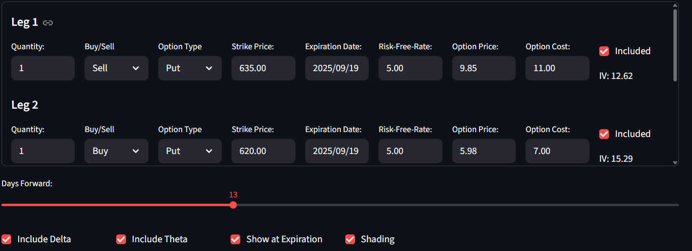
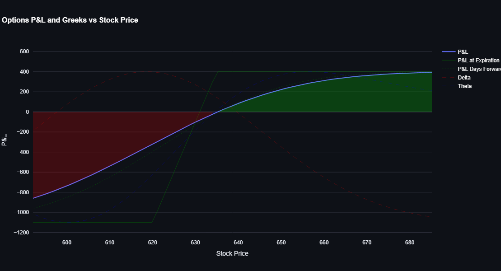

Application Overview
This interactive tool enables traders and analysts to visualize the payoff diagrams and risk profiles of complex options strategies. Key capabilities include:
Strategy Builder
Construct multi-leg options positions including spreads, straddles, strangles, and custom combinations
Risk Analysis
Calculate and visualize key metrics including max profit/loss, breakeven points, and Greeks
Scenario Testing
Simulate how strategies perform under different market conditions and volatility regimes
Technical Implementation
The application leverages modern Python quantitative finance libraries:
- Core Engine: Black-Scholes-Merton options pricing model
- Interface: Streamlit for interactive web deployment
- Visualization: Plotly for dynamic, interactive charts
- Calculations: Days forward and Greeks computations
Key Features
Real-Time Updates
Payoff diagrams adjust instantly to parameter changes
P&L Calculator
Detailed breakdown of strategy profitability at different underlying prices
Interactive Controls
Adjust strikes, volatility, and expiration with intuitive sliders